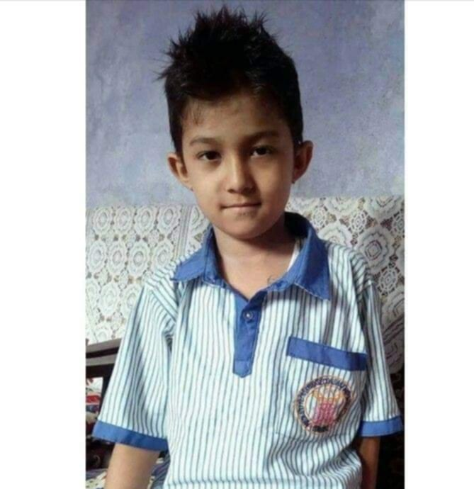

Subarna Shrestha
Dreamer, Explorer, Tech Enthusiast
Dreamer, Explorer, Tech Enthusiast
Hello, I'm Subarna Shrestha, a young enthusiast with a deep passion for technology and innovation. Ever since I was a child, I have been fascinated by how things work, particularly in the realm of computers and gadgets. This curiosity has driven me to constantly learn and explore new technologies, and it is something I continue to pursue with great dedication.
I was born on 2067/7/2 in a small town where I was raised with strong values and a love for learning. My parents, Rabin Shrestha and Kusum Shrestha, have always been my pillars of support. They encouraged me to follow my dreams and instilled in me the importance of hard work and perseverance.
My father, Rabin Shrestha, is a person who has always been there to guide me through life’s challenges, teaching me valuable lessons about resilience and determination. My mother, Kusum Shrestha, has been my emotional anchor, nurturing my dreams and always believing in my potential.
Academically, I have always been a dedicated student, striving for excellence in every subject. My interest in technology led me to pursue various certifications and courses in web development, programming, and other related fields. This continuous learning has allowed me to develop a strong foundation in tech, which I plan to build upon as I progress in my career.
In addition to my academic pursuits, I have been actively involved in several tech-related projects, both individually and as part of a team. These experiences have not only enhanced my technical skills but also taught me the value of teamwork and collaboration. I believe that working together with like-minded individuals can lead to the creation of something truly remarkable.
Looking ahead, my goal is to make significant contributions to the tech industry, whether through innovative projects, research, or by helping others learn and grow in this field. I am committed to continuously improving myself and staying updated with the latest trends and advancements in technology.